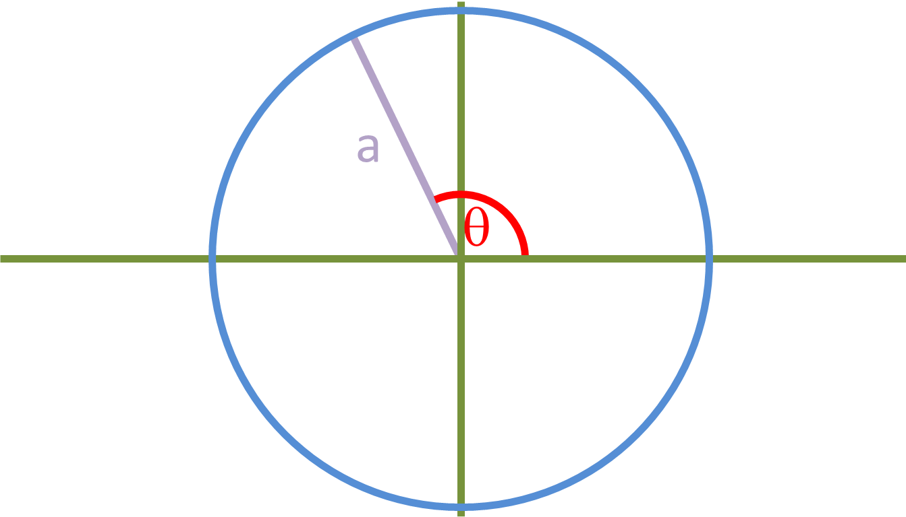
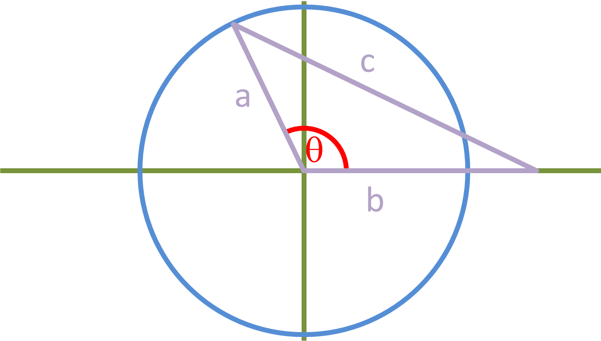
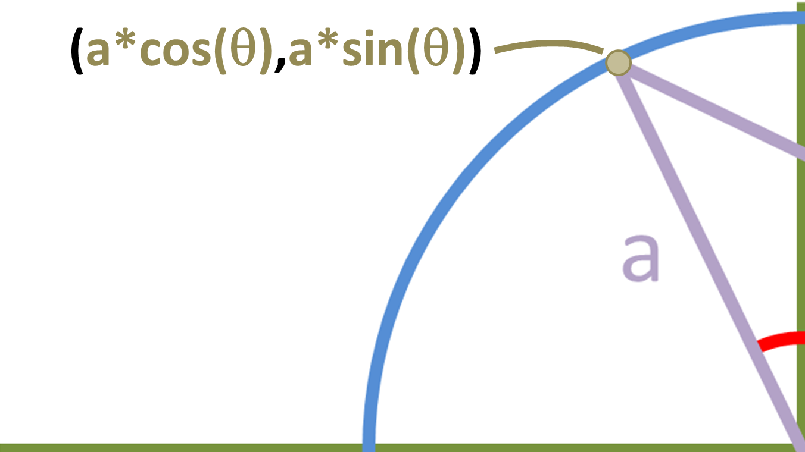
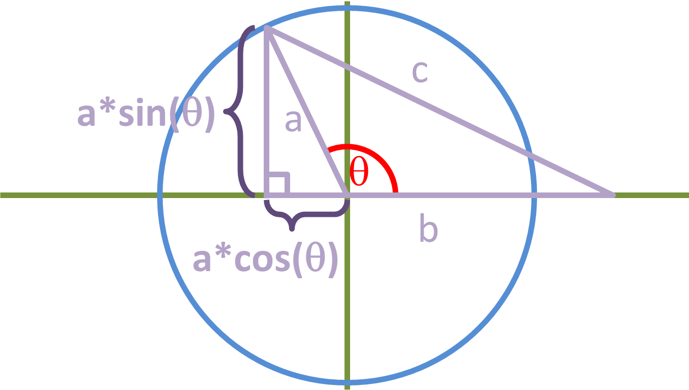
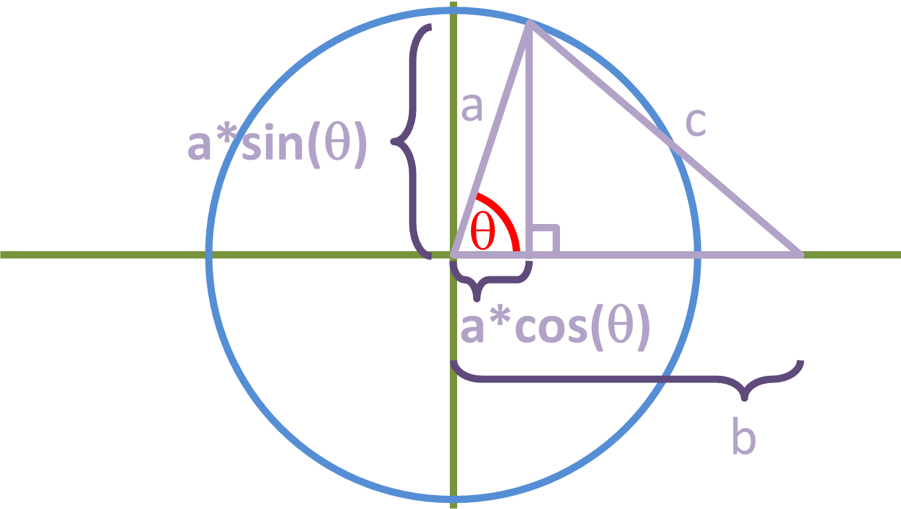
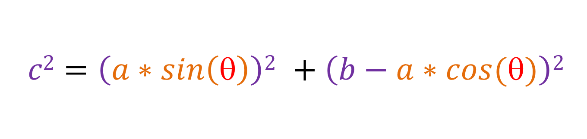
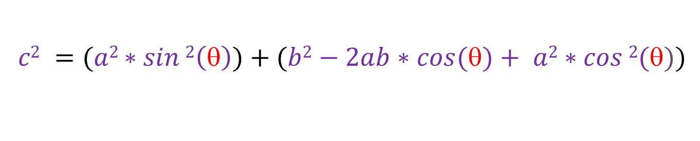
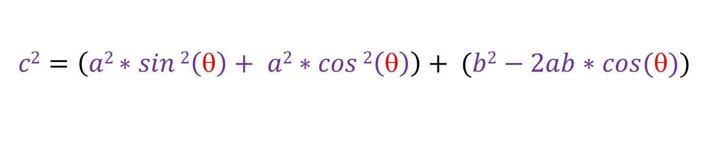
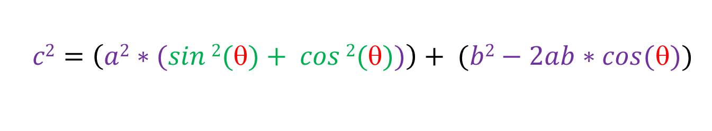
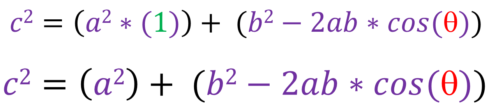

Here is a circle with radius a, angle theta and the centre with coordinates (0,0):
Here is a triangle with sides a, b and c:
The coordinates of the point where line a touches the circle, can be written as:
Now suppose we make a right angled triangle, like this:
This right-angled triangle has sides c, [a*sin(θ)] and [b - a*cos(θ)]. The base of the triangle is [b - a*cos(θ)] and not [b + a*cos(θ)] because cos(θ) would be a negative value since it's in the second quadrant. If θ were to be acute, then the triangle would look something like this:
The base of the right-angled triangle is still [b - a*cos(θ)], so that means it doesn't matter if θ is acute or obtuse, because our final equation will still be the same. Also, if this is a right-angled triangle, that means if we use the pythagoras theorem, then:
If we expand, we get:
Now lets put sin2(θ) and cos2(θ) together:
Now lets take a2 out:
Since [sin2(θ) + cos2(θ) = 1], we can simplify further to get our cosine rule:
